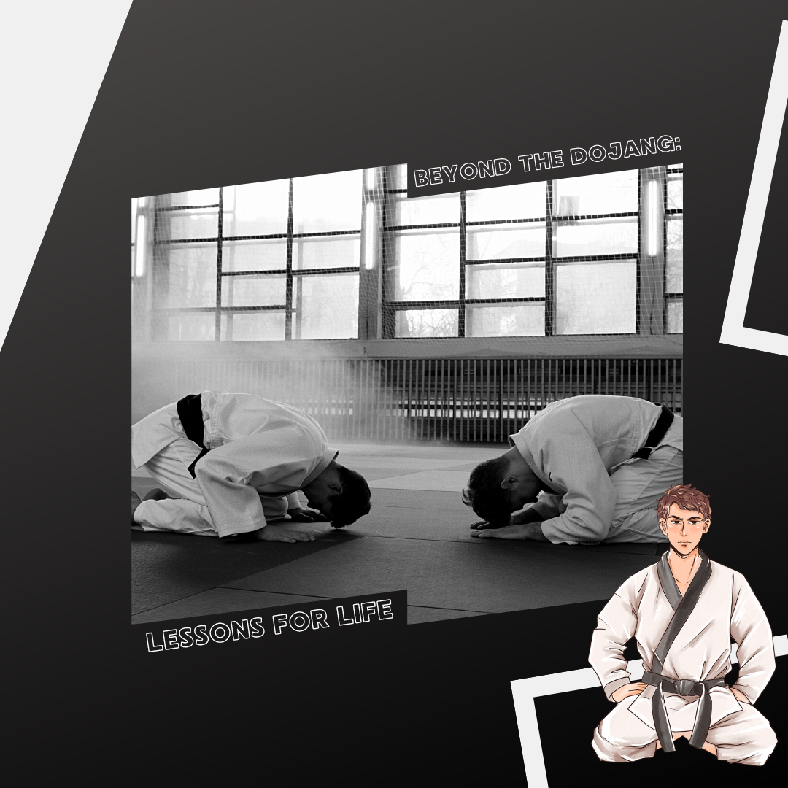

Beyond the Dojang: Lessons for Life
The impact of Taekwondo extends far beyond the boundaries of the dojang. The principles I've learned - respect for oneself and others, perseverance in the face of adversity, and the unyielding spirit to overcome challenges - have become guiding lights in my daily life.
In the professional realm, Taekwondo has instilled in me a sense of discipline and focus that has propelled me forward in my career. It's taught me that true strength lies not just in physical prowess, but in the ability to maintain composure in the face of adversity. In the realm of relationships, Taekwondo has fostered a deep sense of empathy and understanding. It's reminded me that true power is found in lifting others up, in being a source of support and encouragement.
In Taekwondo, I've found a sanctuary, a place of growth, and a community of like-minded individuals. It has sculpted me into a person of discipline, integrity, and indomitable spirit. As I tie my black belt, I'm reminded that the journey is never truly over. It's a lifelong pursuit of self-improvement and a testament to the enduring power of the human spirit.
The impact of Taekwondo goes beyond the physical and technical aspects. It has a profound influence on one's character and values. It's a constant reminder that true strength is not just about physical prowess, but also about mental resilience and the ability to overcome life's challenges with grace and determination.
In my professional life, the discipline instilled by Taekwondo has been a significant asset. The ability to stay focused, set goals, and persevere through obstacles has propelled me forward in my career. It's not just about being physically fit; it's about being mentally strong and resilient, qualities that are highly valued in any profession. In personal relationships, the principles of courtesy and respect have shaped my interactions with others. Taekwondo has taught me the importance of empathy and understanding, making me a better friend, partner, and family member. It's a reminder that true power is not about dominating others but about lifting them up and being a source of support and encouragement.
As I reflect on my journey with Taekwondo, I realize that it has been more than just a physical activity; it's been a life-changing experience. It has shaped my character, influenced my values, and provided me with a supportive community of like-minded individuals. Tying my black belt is not an endpoint but a symbol of a lifelong commitment to self-improvement and a testament to the enduring power of the human spirit.